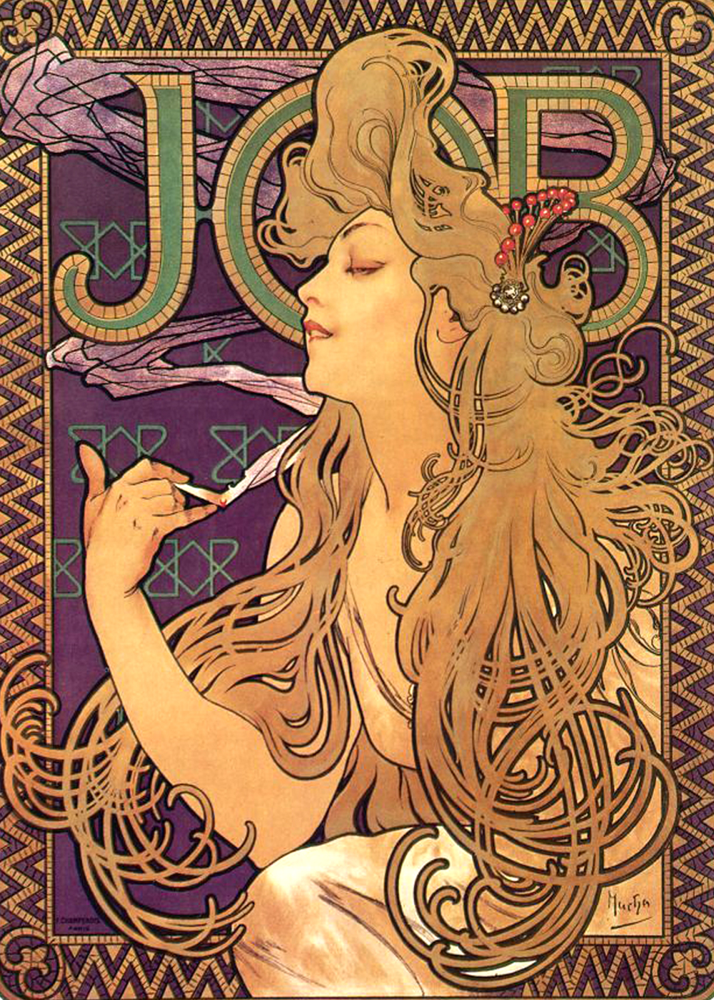
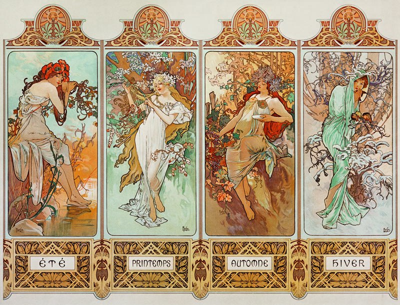
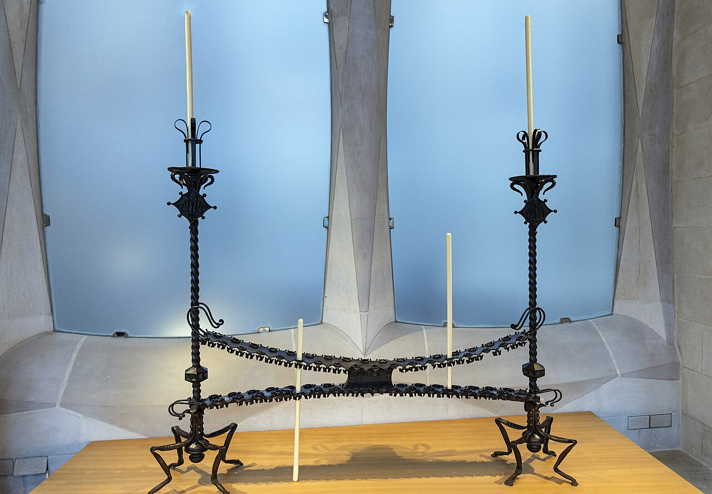
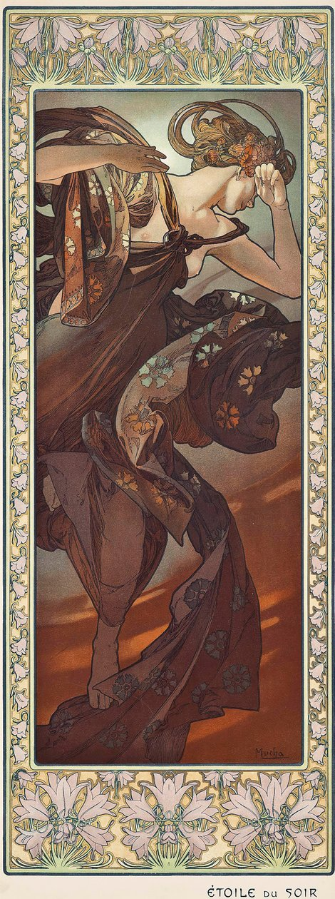
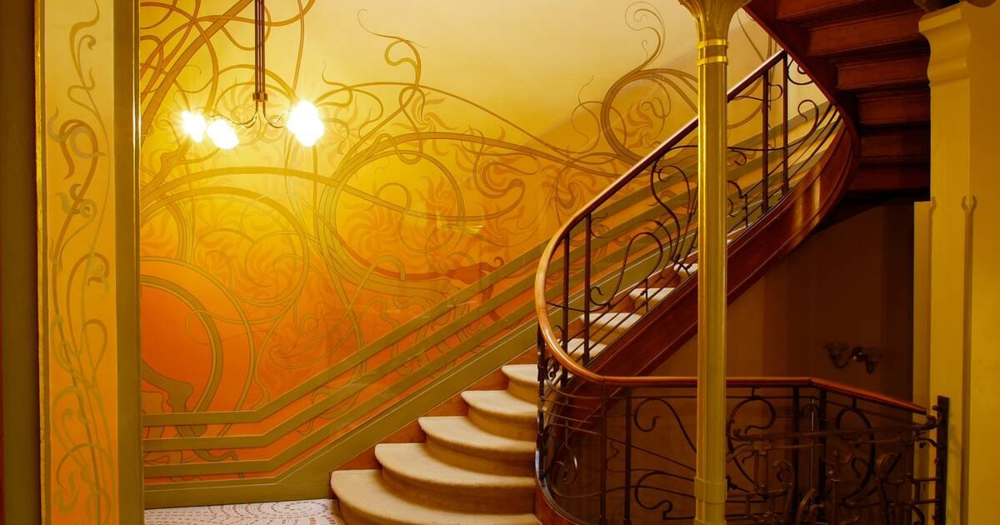
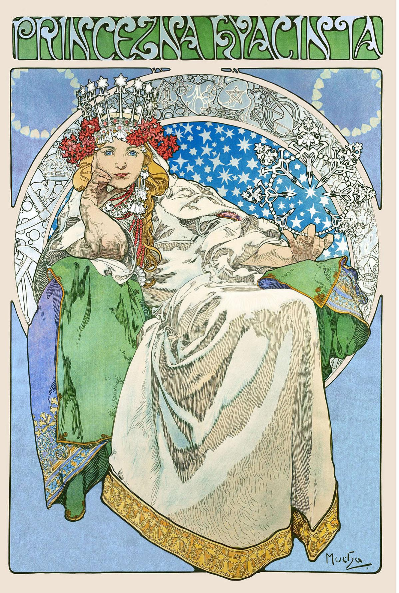
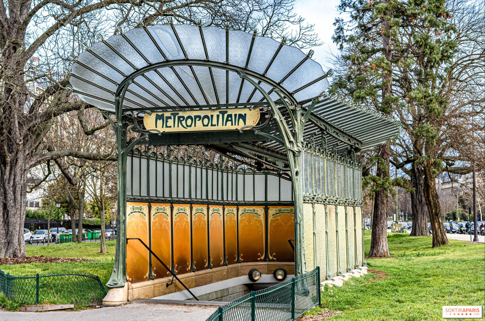
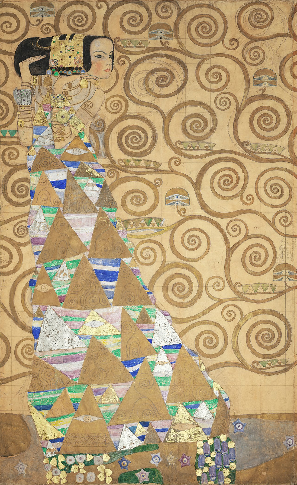

Meesterwerk: Job
Alphonse Mucha, 1896

⚜️ UITGEBREIDE STIJLFIGUREN
🌿 ORGANISCHE LIJNEN
Whip-lash curves: Lange, vloeiende lijnen die golven als plantenstengels. Geen rechte hoeken, geen stijfheid - alles beweegt.
Plantenmotieven: Lelies, irissen, klimop, vlinders. De natuur is de belangrijkste inspiratiebron.
👩 VROUWELIJKE FIGUREN
Lange, slanke vrouwen: Fatale vrouwen met wuivend haar, decoratieve kleding. Ze zijn sensueel maar niet erotisch - esthetisch ideaal.
Symbolische vrouwen: Vrouwen als natuur, als leven, als mysterie. De vrouw als centrale figuur in de kunst.
🎨 GESLOTEN COMPOSITIE
Decoratieve platheid: Geen diepte, geen perspectief. Het beeld is een patroon, een ornament. Twee-dimensionaliteit wordt gevierd.
Randversiering: Sierlijke lijsten, decoratieve hoeken. Het doek is een object, niet een raam.
🔮 SYMBOLISME & MYSTERIE
Droomachtige sfeer: Mystiek, spiritualiteit, esoterie. De kunst gaat over het onzichtbare, het innerlijke.
Jugendstil: In Duitsland en Oostenrijk wordt het "Jugendstil" - de stijl van de jeugd, van vernieuwing.
🎨 MEESTERWERKEN - GEDETAILLEERDE ANALYSE
1. "Job" (1896) — Alphonse Mucha
Reclameposter · 66 × 46 cm · Kleurenlithografie
Achtergrond: Een reclameposter voor Job cigarettepapier. Mucha maakte het beroemd - het wordt het symbool van Art Nouveau. De vrouw rookt, haar haar golft om haar heen. Het is commerciële kunst die tot kunst wordt verheven.
🔍 STIJLANALYSE
De vrouw: Slank, sensueel, passief. Haar ogen zijn half gesloten - extase of vermoeidheid? Ze is een object van schoonheid, geen individu. Dit is het Mucha-type dat hij talloze keren herhaalt.
De lijnen: Haar haar vormt een halo, een cirkel om haar hoofd. De lijnen golven, kronkelen, eindigen nooit. Het is organische ornamentiek.
Decoratie: De rand is even belangrijk als het centrale beeld. De letters "JOB" zijn geïntegreerd in het ontwerp. Het is een totaalbeeld.
Commercie: Dit is reclame, maar op een niveau dat het bijna ironisch maakt. De vrouw is zo mooi dat we vergeten dat ze sigaretten rookt. Kunst verkoopt.
2. "De Kus" (1907-1908) — Gustav Klimt
Österreichische Galerie Belvedere, Wenen · 180 × 180 cm · Olieverf en bladgoud op doek

Achtergrond: Klimt's meest bekende werk, geschilderd tijdens zijn "gouden periode". Een paar kust elkaar op de rand van een bloemenweelde. Het is tegelijkertijd extatisch en decoratief, erotisch en spiritueel.
🔍 STIJLANALYSE
Goud: Echt bladgoud op het doek - Byzantijnse pracht. De man is geometrisch (rechthoeken), de vrouw is organisch (bloemen). Het is man versus vrouw, structuur versus natuur.
Compositie: Het paar zweeft, niet geankerd in de werkelijkheid. Het is een droom, een visioen. De bloemen om hen heen zijn abstracte patronen - geen echte natuur maar decoratie.
Erotiek: De vrouw ontvangt de kus, haar hoofd valt achterover. Het is passief en actief tegelijk. Klimt's werk was vaak controversieel vanwege zijn openlijke sensualiteit.
Symboliek: De kus als universeel symbool van liefde en vergankelijkheid. Maar ook: de eenwording van man en vrouw, van geest en lichaam. Het is bijna religieus in zijn intensiteit.
3. "De Seizoenen" (1896) — Alphonse Mucha
Reeks van 4 panelen · Elk 103 × 54 cm · Kleurenlithografie

Achtergrond: Een reeks van vier panelen die de vier seizoenen verpersoonlijken als vrouwen. Mucha's typische stijl - decoratief, symbolisch, elegant. Het toont hoe Art Nouveau alle aspecten van het leven wilde verfraaien.
🔍 STIJLANALYSE
Cirkel van het leven: Lente (jonge vrouw met bloemen), Zomer (rijp, warm), Herfst (vruchten, nadenkend), Winter (oud, vermoeid). Het is een allegorie van vergankelijkheid.
Decoratie: Elke vrouw is omringd door ornamenten die bij het seizoen passen. De kleding is historiserend - geen moderne jurken maar draperieën. Het is tijdloos.
Kleur: Pastelkleuren - zacht, dromerig. Geen harde contrasten. De sfeer is melancholisch, nostalgisch. Mucha's palet is onmiddellijk herkenbaar.
Toegankelijkheid: Dit waren litho's - goedkoop te reproduceren. Art Nouveau wilde het volk bereiken, niet alleen de elite. Schoonheid voor iedereen.
4. "Sagrada Família" (vanaf 1882, nog in aanbouw) — Antoni Gaudí
Barcelona, Spanje · 172 m hoog (gepland) · Stenen en keramiek

Achtergrond: Gaudí's levenswerk, nog steeds in aanbouw (geplande voltooiing: 2026). Een kerk die niet lijkt op enige andere - organisch, barok, modern, middeleeuws tegelijk. UNESCO Werelderfgoed sinds 1984.
🔍 STIJLANALYSE
Organische architectuur: Geen rechte lijnen - alles kromt en golft als bomen, stengels, golven. Gaudí bestudeerde de natuur om de structuur te begrijpen. Het lijkt een betoverd bos.
Symboliek: De 18 torens staan voor Jezus, Maria, de evangelisten en de apostelen. De gevels tonen geboorte, passie en glorie. Het is een catechismus in steen.
Kleur: Keramische tegels (trencadís) in alle kleuren. Het is speels, bijna kinderlijk. Maar ook spiritueel - het licht dat door de glas-in-loodramen valt is magisch.
Handwerk: Gaudí werkte met ambachtslieden, niet alleen met machines. Elke steen is uniek. Het is een monument van de pre-industriële arbeid in het industrieel tijdperk.
5. "Evening Star" (1902) — Alphonse Mucha
Deel van "The Moon and the Stars" serie · 62 × 39 cm · Kleurenlithografie

Achtergrond: Deel van een serie van vier werken over de maan en sterren. Mucha's typische stijl - een elegante vrouw omringd door decoratieve elementen. De sterren glanzen in haar haar.
🔍 STIJLANALYSE
Circulaire compositie: De vrouw staat in een cirkel van ornamenten. Haar haar vloeit naar buiten, wordt één met de decoratie. Het is bijna mandala-achtig.
Kleur: Nachtblauw, goud, zilver. De sterren zijn heldere accenten. Het is dromerig, melancholisch - de avondster als symbool van verlangen.
De vrouw: Half gesloten ogen, serene uitdrukking. Ze is niet actief maar een passief object van schoonheid. Dit is het Mucha-archetype.
Symbolisme: De avondster (Venus) als symbool van liefde en schoonheid. De natuurkrachten verpersoonlijkt als vrouwen - typisch Art Nouveau.
6. "Judith I" (1901) — Gustav Klimt
Österreichische Galerie Belvedere, Wenen · 84 × 42 cm · Olieverf en bladgoud op doek

Achtergrond: Het bijbelse verhaal van Judith die Holofernes onthoofdt om haar volk te redden. Maar hier is ze niet heroïsch maar sensueel, bijna decadent. Het hoofd van Holofernes is amper zichtbaar.
🔍 STIJLANALYSE
Sensualiteit: Judith's blik is half gesloten, haar mond open. Het is extase, niet wraak. Ze draagt goud en juwelen - meer courtisane dan heldin.
Goud: De gouden achtergrond, de patronen op haar gewaad. Klimt's gouden periode is op zijn hoogtepunt. Het is Byzantijns, heilig, maar ook werelds.
Femme fatale: Judith als gevaarlijke vrouw die mannen vernietigt. Het fin de siècle thema van de "vrouw als mysterie" wordt hier voluit getoond.
Interpretatie: Is dit Judith of Salomé? Klimt verwart de verhalen. Het maakt niet uit - het gaat om het beeld van de sensuele, dodelijke vrouw.
7. "Hotel Tassel" (1893-1894) — Victor Horta
Brussel, België · Woonhuis en kantoor · IJzer, glas, steen

Achtergrond: Het eerste Art Nouveau gebouw ter wereld. Horta ontwierp alles: de gevel, het interieur, het meubilair, de deurklinken. Een totaalconcept van organisch design.
🔍 STIJLANALYSE
De trap: De beroemde werveltrap van gietijzer lijkt op plantenstengels die omhoog groeien. Het is structuur als ornament - functioneel en decoratief tegelijk.
Materialen: IJzer - modern, industrieel - wordt gebruikt voor organische vormen. Het is een paradox: modern materiaal voor natuurlijke vormen.
Licht: Grote glazen koepel boven de trap. Natuurlijk licht stroomt naar binnen. Art Nouveau gebouwen zijn licht, open, luchtig.
Gesamtkunstwerk: Elk detail is ontworpen: tegels, lampen, meubels, deurbeslag. Er is geen verschil tussen "hoog" en "laag" kunst.
8. "Princess Hyacinth" (1911) — Alphonse Mucha
Reclameposter voor theater · 125 × 85 cm · Kleurenlithografie

Achtergrond: Een theaterposter voor een Tsjechisch sprookje. Mucha was zelf Tsjechisch en dit werk combineert Art Nouveau met Slavische folklore. De prinses staat omringd door hyacinten.
🔍 STIJLANALYSE
Folklore: De kleding is niet Franse Art Nouveau maar traditioneel Slavisch. Mucha brengt zijn eigen erfgoed in de internationale stijl.
Bloemen: De hyacinten omringen haar als een halo. Haar naam is letterlijk in beeld gebracht. De natuur en de mens zijn één.
Compositie: Symmetrisch, statisch, bijna iconisch. De prinses is een heilige, een maagd Maria-figuur. Het is decoratief religieus kunst voor het theater.
Kleur: Blauw, wit, goud - koude maar heldere kleuren. Het is winters, magisch, sprookjesachtig. Mucha's kleurgebruik is altijd emotioneel.
9. "Paris Metro Ingangen" (1900-1913) — Hector Guimard
Parijs, Frankrijk · Gietijzer en glas · Verschillende locaties

Achtergrond: Guimard ontwierp de iconische metroringangen voor de nieuwe Parijse metro. Ze werden meteen een symbool van moderniteit. Slechts 86 van de oorspronkelijke 141 zijn bewaard gebleven.
🔍 STIJLANALYSE
Organisch ijzer: De gietijzeren structuren lijken op planten die uit de grond groeien. Het is engineering als botanica. De lijnen zijn asymmetrisch, dynamisch.
Functioneel: Het zijn niet alleen decoratieve objecten maar bescherming tegen regen, licht 's nachts, oriëntatiepunten. Kunst die werkt.
Herkenbaarheid: Je herkent een Guimard-ingang meteen. Het is branding avant la lettre. Art Nouveau wordt visitekaartje van Parijs.
Typisch: De asymmetrie, de golvende lijnen, de bloemmotieven, het groene verf. Het is Art Nouveau in zijn puurste, meest publieke vorm.
10. "Expectation" (1905-1909) — Gustav Klimt
Museum of Applied Arts, Wenen · 193 × 115 cm · Mozaïek uitgevoerd in steen, keramiek, goud, edelstenen

Achtergrond: Oorspronkelijk ontworpen als mozaïek voor de eetzaal van het Stoclet-paleis in Brussel (ook door Josef Hoffmann ontworpen). Een vrouw wacht, omringd door abstracte patronen.
🔍 STIJLANALYSE
Byzantijns: Het mozaïektechniek, het goud, de platheid. Het is een verwijzing naar Ravenna, naar de early Christian art. Maar dan modern, abstract.
Vrouw: Haar lichaam is realistisch geschilderd (of gemozaïekt), maar haar gewaad is abstract patroon. Het contrast tussen figuur en decor is typisch Klimt.
Abstractie: De achtergrond is puur ornament - geometrische vormen, spiralen, bloemen. Het is bijna non-figuratief. Klimt balanceert op de grens van abstractie.
Stoclet Paleis: Een totaalconcept van de Wiener Werkstätte. Klimt's werk was de blikvanger. Het paleis is UNESCO Werelderfgoed.
📚 TIJDSGEEST CONTEXT (1890-1910)
🌍 POLITIEK PERSPECTIEF - Kunst als Politiek Commentaar en Ontkenning
De Art Nouveau (1880-1914) ontwikkelde zich in een politieke context die werd gekenmerkt door de hoogtij van de Belle Époque, de opkomst van nationale bewegingen, en de internationale verspreiding van culturele en technologische innovaties. De politieke structuur werd gedomineerd door stabiele liberale democratieën in West-Europa, terwijl in Midden- en Oost-Europa de multi-etnische keizerrijken (Oostenrijk-Hongarije, Rusland, het Ottomaanse Rijk) onder druk stonden van nationalisme. In België, het bakermat van de Art Nouveau, was de politieke context gekenmerkt door een liberale grondwet, economische voorspoed door koloniale exploitatie van Congo, en een bloeiende bourgeoisie die kunst patronereerde als teken van status en culturele verfijning. In Frankrijk overheerste de Derde Republiek, met zijn nadruk op secularisme, technologie en vooruitgang. In Spanje, waar de Modernisme-beweging bloeide, werd de politiek gekenmerkt door regionale autonomiestreven, vooral in Catalonië, waar Barcelona het centrum werd van een culturele renaissance die zich uitte in architectuur en design.
De sociale dynamiek werd gedomineerd door de opkomst van een welvarende middenklasse die kunst en design patronereerde als uitdrukking van status, smaak en moderniteit. De industriële revolutie had een nieuwe klasse van fabrikanten, handelaren en professionals gecreëerd die rijkdom en culturele aspiraties bezaten. De Art Nouveau sprak deze klasse aan door zowel moderniteit (gebruik van nieuwe materialen zoals ijzer, glas, beton) als verfijning (handgemaakte kwaliteit, uniekheid, exclusiviteit) te combineren. Tegelijkertijd ontwikkelden zich bewegingen die de industrialisatie en massaproductie bekritiseerden, zoals de Arts and Crafts Movement in Engeland, die ambachtelijke kwaliteit en artistieke integriteit promootte. De Art Nouveau werd daardoor een paradoxale beweging: enerzijds een viering van moderniteit en technologische vooruitgang, anderzijds een nostalgische zoektocht naar organische vormen, ambachtelijke perfectie en een verlies van de natuurverbondenheid.
De internationale dimensie was cruciaal. De wereldtentoonstellingen van Parijs (1900) en Turijn (1902) fungeerden als internationale platforms waar ontwerpers, architecten en kunstenaars uit heel Europa en daarbuiten hun werk presenteerden en ideeën uitwisselden. De Art Nouveau kreeg daardoor verschillende nationale varianten: Jugendstil in Duitsland, Secession in Oostenrijk, Modernisme in Catalonië, Stile Liberty in Italië, Nieuwe Kunst in Nederland. Deze variatie weerspiegelde de verschillende politieke, sociale en culturele contexten van de betreffende landen. De beweging was tegelijkertijd internationaal - verbonden door tijdschriften, tentoonstellingen en handel - en lokaal - geworteld in specifieke nationale en regionale tradities.
De verbinding tussen politiek en artistieke stijl was complex. De Art Nouveau's nadruk op organische vormen, asymmetrie en dynamiek weerspiegelde een reactie tegen de academische kunst en de historiserende eclectiek van de 19e eeuw. De beweging zocht naar een nieuwe visuele taal die de moderne tijd kon uitdrukken zonder de traditionele ambachtelijke kwaliteit te verliezen. De verwerping van symmetrie en parallelle lijnen, zoals Hector Guimard stelde dat 'de natuur niets parallel en niets symmetrisch maakt', verbeeldde een filosofische keuze voor organische vrijheid boven geometrische ordening. De nadruk op het totaalontwerp - waarbij architectuur, interieur, meubels, textiel en decoratieve objecten in één consistente stijl werden ontworpen - weerspiegelde het idee van de 'Gesamtkunstwerk' dat de burger omringde met schoonheid en harmonie. De Art Nouveau was daarmee niet slechts een artistieke beweging, maar een sociaal en politiek statement: een poging om de moderne wereld te verzoenen met de schoonheid en harmonie van de natuur, de burger te verheffen door omringing met kunst, en een nieuwe esthetiek te creëren die de 20e eeuw zou bepalen.
Bronnen: Wikipedia - Art Nouveau, Belle Époque, Arts and Crafts movement, Jugendstil, Vienna Secession, Modernisme, Exposition Universelle (1900).
📖 LITERAIR PERSPECTIEF - Symbolisme, Decadentie en de Literatuur van het Fin de Siècle
Art Nouveau en literatuur waren onlosmakelijk verbonden in het fin de siècle. De schilders lazen de dichters, de schrijvers bezochten de schilders, en in de cafes van Parijs, Brussel, en Wenen mengden zich woord en beeld tot een gezamenlijk cultureel project. Het Symbolisme, de Decadence, het Estheticisme - deze literaire bewegingen boden de intellectuele en emotionele context voor Art Nouveau's visuele taal.
Het Franse Symbolisme: Het Symbolisme, dat rond 1880 opkwam als reactie tegen het naturalisme en realisme, zocht de suggestie boven de beschrijving. Stéphane Mallarmé, Paul Verlaine, en later Maurice Maeterlinck weigerden de werkelijkheid direct af te beelden. Mallarmé's beroemde gedicht "L'Après-midi d'un faune" (1876) met zijn suggestieve, droomachtige taal werd geïllustreerd door Edouard Manet en later inspireerde het Claude Debussy's "Prélude à l'après-midi d'un faune" (1894). Het principe was: niet zeggen maar suggereren, niet beschrijven maar oproepen. Art Nouveau nam dit principe over. Mucha's "Evening Star" (1902) toonde niet een "echte" avondster maar een suggestie van avondster-heid - de vrouw, de bloemen, de kleuren, de sfeer. Klimt's "De Kus" (1907-1908) was geen realistische afbeelding van een kus maar een evocatie van kussen, van liefde, van extase. De literaire en visuele symbolisten deelden een afkeer van het alledaagse, het commerciële, het prosaïsche. Ze zochten het mysterie, het droomachtige, het onuitsprekelijke.
Verlaine en Muzikaliteit: Paul Verlaine's gedichten met hun muzikale ritmes, hun vage suggesties, hun "il pleure dans mon cœur" ("het huilt in mijn hart") creëerden een sfeer van melancholie, van herfst, van verval. Art Nouveau deelde deze esthetiek. Mucha's "De Seizoenen" (1896) met zijn cirkel van jeugd naar ouderdom, zijn pastelkleuren, zijn dromerige vrouwen - dit was Vislaine in beeld. De herfst-vrouw met haar vruchten, haar nadenkende blik, haar vermiljoen en goud - ze was de belichaming van Verlaine's "Chanson d'automne" (1866): "Mon cœur d'une langueur monotone." De literatuur bood de emotionele toon, de kunst gaf vorm aan die toon.
Oscar Wilde en het Estheticisme: Oscar Wilde's romans, toneelstukken, en essays vormden de literaire backbone van het estheticisme. "The Picture of Dorian Gray" (1890) beschreef een man wiens portret oud en lelijk werd terwijl hij zelf jong en mooi bleef - een allegorie van de decadentie die kunst boven moraal stelde. Lord Henry Wotton, de cynische mentor van Dorian, zei: "The only way to get rid of a temptation is to yield to it." Wilde's karakter Lord Henry was een karikatuur van de estheet: oververfijnd, cynisch, geobsedeerd door schoonheid. De schilder Basil Hallward die Dorian's portret schilderde was de Art Nouveau kunstenaar: geobsedeerd door esthetiek, ongeïnteresseerd in moraal. Klimt's "Judith I" (1901) met haar sensuele, onmorele Judith was een visuele parallel: geen bijbelse heldin maar een Wilde-achtige femme fatale die genoot van haar destructieve macht. Wilde's eigen leven - zijn proces, zijn gevangenisstraf, zijn ballingschap - was de tragedie die het estheticisme dreigde. Kunst kon niet boven moraal staan zonder gevaar.
Huysmans' "À rebours": Joris-Karl Huysmans' roman "À rebours" (1884, "Tegen de stroom in") werd "de bijbel van het decadentisme" genoemd. De hoofdpersoon, Des Esseintes, was een aristocraat die zich terugtrok in een kunstmatige wereld van zijn eigen schepping. Hij liet zijn huis inrichten met exotische bloemen, kunstmatige parfums, zeldzame boeken, en bizarre verzamelingen. De hele roman was een catalogus van esthetische excessen. Huysmans beschreef: "Il voulait ne plus voir que des fleurs factices, imitées par la main d'artiste, en des matières précieuses." (Hij wilde alleen nog kunstbloemen zien, door kunstenaarshand nagebootst, in kostbare materialen.) Dit was de Art Nouveau ethos in proza: kunst boven natuur, verfijning boven eenvoud, kunstmatigheid boven authenticiteit. Des Esseintes' huis had een schildpad die hij met goud en edelstenen tooide, tot het dier stierf - een gruwelijke metafoor voor hoe kunst kon doden. Huysmans' boek werd door zowel bewonderaars als critici gezien als de literaire expressie van Art Nouveau's decadentie.
Maurice Maeterlinck en Mystiek: De Belgische dichter en toneelschrijver Maurice Maeterlinck (Nobelprijs Literatuur 1911) schreef symbolistische toneelstukken als "Pelléas et Mélisande" (1893) en "L'Oiseau bleu" (1908). Zijn werk was doordrenkt van mysterie, fatalisme, en het onzichtbare. "Pelléas et Mélisande" met zijn droomachtige sfeer, zijn onbestemde dreiging, zijn etherische personages werd op muziek gezet door Debussy (1902) en inspireerde visuële kunstenaars. De Art Nouveau esthetiek van Brussel - Victor Horta's "Hotel Tassel" (1893-1894), de organische architectuur, de mystieke interieurs - deelde Maeterlinck's sfeer van onbestemdheid. De personages in Maeterlinck's stukken spraken in raadselen, bewogen door een wereld die ze niet begrepen. De kijker van Art Nouveau schilderijen - Mucha's "Princess Hyacinth" (1911), Klimt's "Expectation" (1905-1909) - voelde hetzelfde: wat betekende dit? Waar wachtte de vrouw op? Wat was het mysterie?
De Decadentie: De decadente beweging (van het Latijn "de-cadere", weg-vallen) vierde het verval als esthetiek. Charles Baudelaire's "Les Fleurs du mal" (1857) was de vroege klassieker, gevolgd door Verlaine, Rimbaud, Mallarmé, en anderen. De decadentie koos voor het kunstmatige boven het natuurlijke, het perverse boven het normale, het ziekelijke boven het gezonde. Klimt's "Judith I" (1901) met haar seksuele agressie en haar decapitated hoofd was decadent in Baudelaire's zin. De "fleurs du mal" werden visueel: niet echte bloemen maar Art Nouveau ornamenten, niet echte vrouwen maar gestileerde idealen, niet echte natuur maar goud en mozaïek. De psychologie was masochistisch: verheerlijking van zelfdestructie, van oververfijning, van de dood in het leven.
Joris-Karl Huysmans als Kunstcriticus: Huysmans was niet alleen romanschrijver maar ook kunstcriticus. Hij schreef over de impressionisten, de symbolisten, en de Art Nouveau kunstenaars. Zijn beschrijvingen van schilderijen waren lyrisch, bijna hallucinatoir. In "Certains" (1889) beschreef hij Gustave Moreau's schilderijen met zintuiglijke overdaad: "Des femmes aux poses langoureuses, aux corps diaphanes, aux chairs pâmées" (Vrouwen in languede poses, met doorschijnende lichamen, in extase). Deze taal kon ook Klimt's vrouwen beschrijven. Huysmans zag kunst als zintuiglijke ervaring, als ontsnapping uit de verveling van het dagelijks leven. Art Nouveau deelde dit doel: de kijker moest worden verleid, overweldigd, getransporteerd naar een andere wereld.
De Dandy en de Estheet: De figuur van de dandy - oorspronkelijk geassocieerd met Beau Brummell in het vroege 19e-eeuwse Londen - werd het model voor de fin de siècle estheet. De dandy was een man die zichzelf als kunstwerk beschouwde, wiens kleding, manieren, en conversation allemaal esthetisch waren geconstrueerd. Wilde was de beroemdste dandy-estheet, maar het type was wijdverbreid. De Art Nouveau kunstenaar was vaak zelf een dandy: Klimt met zijn gewaden en baard, Mucha met zijn elegante voorkomen, Gaudí met zijn ascetische maar verfijnde levensstijl. De literatuur van het estheticisme - Wilde's essays, Huysmans' romans, Barbey d'Aurevilly's verhalen - beschreef de dandy als held en martelaar. De dandy weigerde te werken (arbeid was voor de bourgeoisie), weigerde te trouwen (vrouw en kinderen waren beknotting), en wijdde zich aan schoonheid. Deze levensstijl was economisch alleen mogelijk voor de rijken, maar de mythe was democratisch: iedereen kon een estheet zijn in zijn ziel.
De Kunstkritiek: De literatuur van Art Nouveau was niet alleen creatief maar ook kritisch. Critici als Octave Mirbeau, Félix Fénéon, en later Roger Marx schreven over de beweging in kranten en tijdschriften. Hun taal was poëtisch, impressionistisch, bijna zelf Art Nouveau. Mirbeau beschreef Rodin's beeldenhuiskunst: "Des formes qui surgissent, qui s'effacent, qui se perdent, qui renaissent" (Vormen die oprijzen, vervagen, verloren gaan, herrijzen). Deze stijl kon ook Art Nouveau architectuur beschrijven: Horta's golvende ijzeren lijnen, Guimard's metro-ingangen, Gaudí's organische torens. De kunstkritiek zelf werd literatuur, de taal werd ornament.
Het Einde van de Eeuw: De literatuur van het fin de siècle was doordrenkt van het gevoel van einde. De 19e eeuw liep ten einde, en met het einde kwam angst en hoop. Zou de 20e eeuw beter zijn? Of erger? De decadenten vierden het einde als bevrijding van de Victoriaanse beknottingen. De optimisten (vooruitgangsgeloof, technologie, democratie) zagen het einde als overgang naar een gouden toekomst. De pessimisten (Nietzsche, Spengler later) zagen het einde als ondergang. Art Nouveau balanceerde tussen deze polen. Gaudí's "Sagrada Família" (vanaf 1882) was een project voor de eeuwigheid, voorbij de eeuwwisseling. Klimt's "De Kus" (1907-1908) was tijdloos, niet gelokaliseerd in 1907-1908 maar in een eeuwig heden. Mucha's "De Seizoenen" (1896) toonde de cyclus van tijd, niet het einde maar de eeuwige terugkeer. De literatuur en kunst van Art Nouveau wilden ontsnappen aan de tijd, aan het historische moment, en een wereld scheppen die boven de tijd stond.
Conclusie: Art Nouveau kan niet volledig worden begrepen zonder zijn literaire context. Het Symbolisme bood de methode (suggestie boven beschrijving), het Decadentisme bood de toon (verfijning, verval, kunstmatigheid), het Estheticisme bood de ethiek (kunst voor kunst). De schrijvers en schilders van het fin de siècle lazen elkaars werk, bezochten dezelfde cafes, deelden dezelfde ideeën. Mucha illustreerde boeken, Klimt las Mallarmé, Gaudí kende Maeterlinck. Deze synergie maakte Art Nouveau tot meer dan een stijl: het was een cultuur, een wereldbeeld, een manier van leven. De literatuur gaf woorden aan wat de kunst schilderde, en de kunst gaf beelden aan wat de literatuur beschreef. Samen creëerden ze de wereld van het fin de siècle: beautiful, decadent, doomed, and unforgettable.
🧠 PSYCHOLOGISCH PERSPECTIEF - Gender, Identiteit en de Psychologie van Decoratie
De psychologie van Art Nouveau was doordrenkt van de Victoriane begrippen van gender, seksualiteit, en identiteit die tegelijkertijd werden uitgedaagd en versterkt. Sigmund Freud's "Die Traumdeutung" (1899) markeerde het begin van de psychoanalyse, en hoewel de meeste Art Nouveau kunstenaars geen directe kennis hadden van Freud's theorieën, weerspiegelde hun werk de psychologische onderstromen van het fin de siècle: onderdrukte verlangens, angst voor vrouwelijke seksualiteit, decadentie als symptoom, en de droom als realiteit.
De Nieuwe Vrouw en Angst voor Verandering: De "New Woman" van de late 19e eeuw - onafhankelijk, opgeleid, werkend, fietsend, rokend - was zowel een realiteit als een bedreiging voor de patriarchale orde. Vrouwen eisten stemrecht (in Groot-Brittannië werd de Suffragette beweging actief rond 1903), toegang tot universiteiten, en economische onafhankelijkheid. Art Nouveau's verering van de vrouw kan worden gelezen als een poging om deze bedreiging esthetisch te controleren. De vrouwen in Mucha's posters - "Job" (1896), "De Seizoenen" (1896), "Princess Hyacinth" (1911) - zijn passief, dromerig, decoratief. Ze roken (moderne vrouw!) maar hun ogen zijn half gesloten, hun lichaamstaal is ontspannen, niet assertief. Ze zijn objecten van schoonheid, geen subjecten met macht. De psychologie hier is compensatoir: als vrouwen in de echte wereld machtiger worden, moeten ze in de kunst passiever worden om de mannelijke blik tevreden te stellen.
Seksualiteit en Decoratie: Freud's theorie van seksualiteit als primaire drijfveer van menselijk gedrag (ontwikkeld vanaf de vroege 1900s, maar weerspiegelend Victoriaanse obsessies) vond zijn visuele expressie in Art Nouveau's organische vormen. De whip-lash curves, de golven, de openingen en sluitingen - allemaal konden als erotisch worden gelezen. Klimt's "De Kus" (1907-1908) toonde een paar in extase, de man's geometrische gewaad contrasterend met de vrouw's organische bloemenpatronen. De kus zelf was intiem, bijna obsceen in zijn openlijke sensualiteit. Maar de decoratie - het goud, de ornamenten, de Byzantijnse pracht - verhulde de seksualiteit in esthetiek. Dit was Freud's concept van sublimatie: seksuele energie omgezet in creatieve arbeid. De kijker kon naar "De Kus" kijken en zich prettig voelen (het was kunst, niet pornografie) terwijl dezelfde verlangende werden opgeroepen als door een erotische afbeelding. De psychologie was hypocrisie als esthetiek.
Hystérie en de Femme Fatale: Hysterie (van het Griekse "hystera" = baarmoeder) was de Victoriane diagnose voor vrouwelijke emotionele instabiliteit. Tegen 1900 werd hysterie gezien als een modern fenomeen, veroorzaakt door de spanningen van het stadsleven. Klimt's "Judith I" (1901) met haar half-gesloten ogen, haar sensuele mond, haar opgeheven hoofd dat dat van Holofernes vasthoudt - dit was de femme fatale, de vrouw die mannen vernietigde. Judith's blik was zowel extatisch als lethargisch, zowel triomfantelijk als passief. De psychologie was complex: was dit een vrouw met macht (zij doodt de man) of een vrouw die bezeten is (zij is een instrument van hogere krachten)? De dandy, de decadent, de estheet van het fin de siècle - zij vreesden de vrouw maar verlangden ook naar haar vernietigende kracht. Judith was de projectie van deze dubbelheid: fascinatie en angst, begeerte en dood.
Androgynie en Homo-erotiek: De gendergrenzen in Art Nouveau waren soms vervaagd. De vrouwen waren vaak slank, bijna jongensachtig (Mucha's figuren hadden kleine borsten, smalle heupen), terwijl de ornamenten vrouwelijk waren. In Klimt's werk verdween de man soms helemaal: "De Kus" toonde een man, maar zijn gezicht was verborgen, zijn lichaam was ornament. De vrouw was het ware subject. Oscar Wilde's proces en gevangenisstraf (1895) maakten homoseksualiteit publiekelijk besproken (hoewel als schandaal). De esthetische beweging werd geassocieerd met homo-erotiek: de nadruk op mannelijke schoonheid, de afwijzing van Victoriaanse mannlijkheid, de verering van kunst boven actie. Mucha's "Evening Star" (1902) met haar androgyme, etherische vrouw kon als queer worden gelezen: niet vrouwelijk genoeg voor traditionele vrouwelijkheid, niet mannelijk, maar iets anders. De psychologie van Art Nouveau was vaak ambigue, weigerend vaste categorisering.
Dromen en het Onderbewuste: Freud's "Die Traumdeutung" (1899) stelde dat dromen de "koninklijke weg naar het onderbewuste" waren. Art Nouveau's droomachtige sfeer - de zwevende figuren, de organische vormen, de afwezigheid van realisme - kan worden gelezen als visualisering van het onderbewuste. Mucha's "De Seizoenen" (1896) toonden vrouwen die niet in de realiteit bestonden maar in een droomwereld van bloemen en ornamenten. Klimt's "Expectation" (1905-1909) toonde een wachtende vrouw, maar waarop? De onzekerheid, het verlangen, de verwachting - dit waren psychologische staten die niet concreet konden worden uitgebeeld maar alleen gesuggereerd. Gaudí's "Sagrada Família" (vanaf 1882) met zijn hallucinatoire architectuur leek op een droomgebouw, een product van het onderbewuste dat geen rekening hield met rationele architectuurregels. De organische vormen - bomen, stengels, bloemen - waren archetypische symbolen die diep in het collectieve onderbewuste verankerd waren (Jung's theorie zou later ontwikkelen, maar de idee was al aanwezig).
Decadentie en Neurose: Het fin de siècle werd gekenmerkt door wat later "fin de siècle syndrome" zou worden genoemd: een gevoel van verval, van uitputting, van einde. De estheten van de jaren 1890 - Wilde, Huysmans, Baudelaire - vierden decadentie als esthetiek. Oververfijning, kunstmatigheid, zintuiglijke overbelasting - dit waren zowel psychologische symptomen als artistieke keuzes. Klimt's "De Kus" (1907-1908) met zijn overdadige goud, zijn weelderige ornamenten, zijn verstikkende decoratie - dit was decadentie in visuele vorm. De psychologie was neurasthenie (zenuwzwakte), een diagnose die populair was in de late 19e eeuw: te veel prikkels, te veel beschaving, te veel kunst leiden tot uitputting. De Art Nouveau vrouw met haar passiviteit, haar half-gesloten ogen, haar vermoeide elegantie - zij was het symptoom van deze oververfijnde cultuur.
Angst voor de Natuur: Art Nouveau vierde de natuur - planten, bloemen, insecten - maar deze viering bevatte ook angst. De organische vormen konden overwoekeren, verdringen, verstikken. In Klimt's "De Kus" (1907-1908) worden de geliefden omringd door een zee van ornamenten die hen bijna opslokt. De bloemenweelde onder hen is abstract, niet te onderscheiden - het is natuur als chaos, niet als tuin. Horta's "Hotel Tassel" (1893-1894) met zijn ijzeren plantenstengels die door het huis groeiden - was dit een harmonieuze integratie van natuur en architectuur, of een nachtmerrie van de natuur die het menselijke binnendringt? De psychologie was dubbel: verlangen naar natuur (als tegenstelling tot industrie) maar angst voor natuur (als oncontroleerbare kracht). De decoratie was een poging om de natuur te temmen, te domesticeren, te esthetiseren.
Decoratie als Defensie: De Victoriane psychologie zag decoratie als vrouwelijk, rationaliteit als mannelijk. De man die zich omgaf met Art Nouveau decoratie - het huis van Horta, het Stoclet Paleis van Hoffmann - riskeerde als "effeminate" (verwijfd) te worden gezien. Toch deden veel mannen dit. De psychologie was compensatoir: in een tijd van agressieve industrialisering, imperialisme, en mannelijke competitie, bood Art Nouveau een toevluchtsoord van zachtheid, schoonheid, domesticiteit. De man kon thuiskomen in zijn Art Nouveau interieur en de harde wereld buitensluiten. De organische lijnen, de pastelkleuren, de vrouwelijke figuren - dit was een tegenwereld die de psychologische balans herstelde. Maar het was ook een vorm van ontkenning: de werkelijkheid (arbeidersuitbuiting, kolonialisme, oorlogsdreiging) werd verdrongen door esthetiek.
Collectief Onderbewuste en Archetypen: Hoewel Carl Jung's theorie van het collectieve onderbewuste pas in de jaren 1910-1920 volledig zou worden ontwikkeld, weerspiegelde Art Nouveau al Jungiaanse thema's. De verering van de vrouw als godin, natuurkracht, of kosmisch principe - Mucha's "The Moon and the Stars" (1902), de seizoenen als vrouwen (1896), de elementen als vrouwen - dit waren archetypische beelden die universeel herkenbaar waren. De anima (Jung's term voor het vrouwelijke aspect in de mannelijke psyche) projecteerde op doek en steen. De Grote Moeder, de Maagd, de Verleidster - allemaal verschenen ze in Art Nouveau. De psychologie was niet individueel maar collectief: de kunstenaar gaf vorm aan wat in het collectieve onderbewuste van het fin de siècle leefde.
Conclusie: De psychologie van Art Nouveau was een mengeling van verlangen en angst, van progressieve en conservatieve krachten. De beweging vierde de vrouw maar controleerde haar esthetisch. Het verheerlijkte seksualiteit maar verhulde het in decoratie. Het zocht de natuur maar vreesde de wildernis. Het verlangde naar moderniteit maar vluchtte in droomwerelden. Deze paradoxen maakten Art Nouveau tot een perfecte expressie van het fin de siècle psyche: een tijdperk dat tegelijkertijd optimistisch en pessimistisch was, vooruitkijkend en achterom, verlangend naar vernieuwing en bang voor verandering. De psychologische diepgang van de beweging - haar vermogen om onbewuste verlangens en angsten visueel te maken - verklaart waarom Art Nouveau nog steeds zo'n sterke emotionele respons oproept bij kijkers vandaag.
⚙️ HISTORISCH PERSPECTIEF
De Art Nouveau, die floreerde tussen 1890 en 1914, ontstond in een periode van intense industriële expansie en culturele herbezinning. De negentiende eeuw had de westerse wereld getransformeerd van een overwegend agrarische samenleving naar een geïndustrialiseerde beschaving die gedreven werd door stoom, staal en elektriciteit. Steden als Parijs, Brussel, Barcelona, Wenen en Glasgow groeiden explosief, en met deze groei kwamen zowel ongekende mogelijkheden als ernstige sociale problemen. De bourgeoisie, verrijkt door de industrialisatie, zocht naar een nieuwe esthetiek die hun status kon uitdrukken en tegelijkertijd de vervreemding van de moderne tijd kon verzachten. De technologische vooruitgang was overweldigend: de elektrificatie van steden veranderde de nacht in dag, de telegraaf en later de telefoon maakten communicatie over grote afstanden mogelijk, en het spoorwegnet verbond continenten. Deze technologie bracht echter ook een gevoel van massaproductie en anonimiteit met zich mee. De Arts and Crafts Movement, gestart door William Morris in Engeland rond 1860, had al een reactie tegen de goedkope fabrieksproductie geformuleerd en de waarde van ambachtelijke kunst bepleit. Art Nouveau bouwde voort op deze ideeën maar omarmde ook nieuwe materialen en technieken. IJzer en glas werden gebruikt voor architectuur, zoals te zien is in de metro-ingangen van Hector Guimard in Parijs en de gebouwen van Victor Horta in Brussel. De economische context was er een van ongelijkheid: de industriële baronnen van de Belle Époque acumuleerden onvoorstelbare rijkdom, terwijl arbeiders in sloppenwijken leefden. De internationale handel breidde zich uit, en koloniale rijken brachten exotische materialen en motieven naar Europa. De invloed van Japan, dat zich na de Meiji-restauratie van 1868 opende voor het westen, was bijzonder sterk: Japanse prenten introduceerden asymmetrische composities, vloeiende lijnen en een totaal andere benadering van ruimte en ornamentiek. Sociaal gezien was dit een tijd van emancipatiebewegingen: vrouwen eisten stemrecht, arbeiders organiseerden zich in vakbonden, en de socialistische beweging groeide. De Eerste Wereldoorlog zou in 1914 een einde maken aan deze bloeitijd en de oude Europese orde voorgoed veranderen. Art Nouveau was in veel opzichten de laatste opbloei van een romantische, Europese beschaving voordat de moderne tijd met al zijn geweld en vervreemding definitief aanbrak. De wetenschappelijke context omvatte belangrijke ontdekkingen op het gebied van natuurlijke historie en biologie, waaronder de evolutietheorie van Charles Darwin die sinds 1859 diepgaand debat had veroorzaakt. Kunstenaars werden beïnvloed door de bestudering van planten en dieren, wat resulteerde in de organische vormen en natuurlijke motieven die kenmerkend waren voor Art Nouveau. De symbolistische beweging in de literatuur, met figuren als Stéphane Mallarmé en Charles Baudelaire, bood een intellectueel kader waarin kunst gezien werd als poort naar hogere waarheden, een idee dat aansloot bij de spirituele aspiraties van veel Art Nouveau kunstenaars. De Wereldtentoonstellingen van 1889 en 1900 in Parijs fungeerden als internationale platforms waar nieuwe stijlen en technologieën aan een breed publiek werden gepresenteerd, wat de verspreiding van Art Nouveau over heel Europa en daarbuiten versnelde.
🎭 FILOSOFISCH PERSPECTIEF - Estheticisme, Gesamtkunstwerk en de Kritiek op Moderniteit
Art Nouveau was een filosofische beweging die de kunst tot het centrum van het leven wilde maken. In een tijd van industriële massaproductie, wetenschappelijk materialisme, en sociale fragmentering boden de Art Nouveau kunstenaars een alternatief: de wereld verfraaien tot één geheel, esthetiek als religie, schoonheid als verlossing. Deze filosofie had haar wortels in verschillende intellectuele tradities die samensmolten in het fin de siècle.
Schopenhauer en Esthetische Contemplatie: Arthur Schopenhauer's filosofie, met name "Die Welt als Wille und Vorstellung" (1818), had een diepe invloed op de 19e-eeuwse esthetiek. Schopenhauer stelde dat het leven fundamenteel lijden was, gedreven door de blinden "Wil" (de universele drang tot bestaan). De enige ontsnapping was esthetische contemplatie: door kunst te ervaren, kon de mens tijdelijk opgaan in het object en verlost worden van de Wil. Klimt's "De Kus" (1907-1908) met zijn gouden wereld waar het paar zweeft, afgesloten van realiteit, is een visualisering van deze Schopenhaueriaanse verlossing. De kijker die lang naar het werk kijkt, verliest zich in de ornamenten, de patronen, de kleuren - en vergeten even de pijn van het bestaan. Klimt zelf was bekend met Schopenhauer's werk, en zijn nadruk op sensualiteit, erotiek, en vergankelijkheid weerspiegelde Schopenhauer's pessimisme over de Wil.
Nietzsche en de Geboorte van de Tragedie: Friedrich Nietzsche's "Die Geburt der Tragödie" (1872) introduceerde het onderscheid tussen het Apollinische (orde, vorm, individuatie) en het Dionysische (chaos, extase, verlies van zelf). Art Nouveau balanceerde voortdurend tussen deze twee polen. Aan de ene kant waren er de Apollinische ordeningen: de symmetrie van Mucha's posters, de geometrische patronen in Klimt's "Expectation" (1905-1909), de gestructureerde compositie van "De Seizoenen" (1896). Aan de andere kant was er het Dionysische: de organische lijnen die controle leken te ontvluchten, de erotische lading van Klimt's vrouwen, de extase van de rokende vrouw in Mucha's "Job" (1896). Gaudí's "Sagrada Família" (vanaf 1882) combineerde beide: de structuur was Apollinisch (torens, gevels, symboliek), maar de vormen waren Dionysisch (golvende, organische, bijna hallucinatoire architectuur). Nietzsche zelf zou de moderne kunst waarschijnlijk hebben bekritiseerd als "decadent" - maar Art Nouveau's viering van het lichaam, de natuur, en de levensdrift weerspiegelde zijn invloedrijke ideeën over kunst als levensbevestiging.
Het Gesamtkunstwerk: Richard Wagner's concept van het Gesamtkunstwerk ("totaalkunstwerk") - een kunstwerk dat alle kunsten (muziek, toneel, beeldende kunst, architectuur) combineert - werd het ideaal van Art Nouveau. Victor Horta's "Hotel Tassel" (1893-1894) was niet alleen een gebouw maar een totaalontwerp: gevel, interieur, meubels, lampen, deurklinken, alles in dezelfde organische stijl. Er was geen onderscheid tussen "hoge kunst" (schilderkunst) en "decoratie" (meubels, behang). Het hele huis was kunst. Joseph Hoffmann en de Wiener Werkstätte (opgericht 1903) namen dit ideaal over in Wenen, waar Klimt's "Expectation" (1905-1909) werd uitgevoerd als mozaïek voor het Stoclet Paleis. Het gebouw (ontworpen door Hoffmann) en de kunst (Klimt) waren één geheel. De filosofische onderbouwing was democratisch: kunst moest niet in musea hangen maar het dagelijks leven doordringen. De mens zou leven in kunst, ademen in kunst, slapen in kunst. Dit was een reactie tegen de fragmentering van de moderne wereld - arbeid hier, kunst daar, religie elders. Het Gesamtkunstwerk beloofde eenheid.
William Morris en de Arts and Crafts: De Britse Arts and Crafts beweging (ca. 1880-1920), geleid door William Morris en beïnvloed door John Ruskin, vormde de directe voorloper van Art Nouveau. Morris bekritiseerde de industriële massaproductie: machines maakten lelijke, goedkope goederen en ontnamen arbeiders hun creativiteit. Hij pleitte voor handwerk, individuele productie, en de verbinding van kunst en ambacht. De slogan "Have nothing in your houses that you do not know to be useful, or believe to be beautiful" werd de credo van Art Nouveau. Horta's "Hotel Tassel" toonde dit ideaal: elk object was zowel functioneel als mooi, gemaakt door geschoolde ambachtslieden. De tegels, het smeedwerk, het meubilair - alles was handgemaakt. Toch was er een paradox: Morris' socialisme (kunst voor het volk) botste met de realiteit dat handgemaakte Art Nouveau duur was en alleen de rijken zich konden permitteren. Klimt's gouden schilderijen, Gaudí's keramiek, Horta's maatwerk - dit was luxe, niet arbeiderskunst. Alleen Mucha's lithografieën (goedkoop te reproduceren) en Guimard's metro-ingangen (openbare kunst) benaderden Morris' democratische ideaal.
Oscar Wilde en Estheticisme: Oscar Wilde's estheticisme - "art for art's sake" (l'art pour l'art) - stelde dat kunst geen morele of didactische functie had maar alleen esthetisch moest zijn. Kunst moest mooi zijn, niet goed of nuttig. Deze filosofie sloot aan bij Art Nouveau's nadruk op decoratie, ornament, en visueel genot. Mucha's posters - "Job" (1896), "Princess Hyacinth" (1911), "Evening Star" (1902) - waren esthetische objecten die ook commercieel waren. Ze wilden niet veranderen of beteren maar verfraaien. Wilde's "The Picture of Dorian Gray" (1890) met zijn fascinatie voor schoonheid, decadentie, en kunst die meer dan het leven wordt, kon als literaire parallel dienen. Klimt's "Judith I" (1901) met haar sensuele, onmorele Judith was een visuele belichaming van Wilde's estheticisme: geen morele boodschap, alleen esthetische intensiteit. De kritiek op Wilde (hij werd in 1895 veroordeeld voor homosexualiteit en gevangen gezet) toonde dat het puriteinse Victorianisme estheticisme als moreel gevaarlijk zag.
Theosofie en Esoterie: De theosofische beweging (opgericht door Helena Blavatsky in 1875) mengde oosterse en westerse esoterische tradities en trok vele kunstenaars aan. De theosofie leerde dat er een universele waarheid achter alle religies lag, dat de mens door spirituele evolutie kon opklimmen, en dat symboliek en rituelen deze waarheid konden ontsluiten. Klimt was bekend met theosofische ideeën, en zijn gouden schilderijen met hun mystieke atmosfeer kunnen als theosofisch worden gelezen. "De Kus" (1907-1908) met zijn transcendente, bijna heilige sfeer, suggereerde een spirituele eenheid van man en vrouw die verder ging dan het fysieke. Gaudí's "Sagrada Família" (vanaf 1882) was expliciet katholiek, maar de symboliek - de 18 torens, de drie gevels, de numerologie - had esoterische lagen die verder gingen dan orthodoxie. Mucha's "The Moon and the Stars" serie (waarvan "Evening Star" (1902) deel uitmaakte) verpersoonlijkde kosmische krachten als vrouwen, een typisch theosofisch idee. De verering van de vrouw in Art Nouveau was vaak niet alleen esthetisch maar ook spiritueel: de vrouw als hogere natuur, als verbinding met het goddelijke, als priesteres van het leven.
Leven als Kunstwerk: Walter Pater, Engelse criticus en estheet, schreef in "The Renaissance" (1873): "To burn always with this hard, gem-like flame, to maintain this ecstasy, is success in life." Het leven zelf moest een kunstwerk worden, elke dag esthetisch gevuld, elke ervaring verfijnd. De Art Nouveau interieurs - Horta's huizen, Hoffmann's paleizen, Gaudí's gebouwen - waren pogingen om deze filosofie te belichamen. De bewoner zou opstaan in een organisch bed, zich wassen aan een Art Nouveau wastafel, aankleden voor een Art Nouveau spiegel, eten van Art Nouveau servies. Het leven zou kunst worden, kunst leven. Deze "lifestyle" benadering was revolutionair en zou later worden overgenomen door art deco, modernisme, en uiteindelijk hedendaagse design. De filosofie was radicaal individualistisch: niet de maatschappij hervormen, maar het eigen leven verfraaien. Dit botste met het socialisme van Morris maar sloot aan bij het decadente estheticisme van Wilde.
De Dood van God en Nieuwe Spiritualiteit: Nietzsche's proclamatie "God is dood" (in "Die fröhliche Wissenschaft", 1882) markeerde de secularisatie van de 19e eeuw. Maar de mens behoefde betekenis, en kunst bood een seculiere religie. Klimt's "De Kus" (1907-1908) was geen christelijk schilderij (geen kruis, geen engelen, geen heiligen) maar had een bijna-religieuze intensiteit. De liefde werd heilig, het lichaam tempel, het orgasme gebed. Gaudí's "Sagrada Família" (vanaf 1882) was expliciet religieus, maar de vormen waren modern, organisch, bijna heidens in hun natuurlijke vitaliteit. Art Nouveau zocht een nieuwe spiritualiteit die paste bij de moderne tijd: niet dogmatisch katholicisme maar universele mystiek, niet kerkelijke autoriteit maar individuele ervaring, niet hemelse verlossing maar aardse verfraaiing.
Conclusie: Art Nouveau was een filosofisch project dat probeerde de moderne wereld te verlossen via esthetiek. De organische lijnen, de verering van de vrouw, het Gesamtkunstwerk, de mix van spiritualiteit en sensualiteit - allemaal waren ze pogingen om betekenis te creëren in een tijd van materialisme en fragmentering. De beweging faalde in haar politieke ambities (de Eerste Wereldoorlog brak uit, de revoluties kwamen niet), maar slaagde in haar esthetische: Art Nouveau bleef een van de meest herkenbare en geliefde stijlen in de kunstgeschiedenis. De filosofie dat kunst het leven moet doordringen leefde voort in art deco, Bauhaus, mid-century modern, en hedendaagse design - allemaal erfgenamen van het Art Nouveau ideaal.
📚 CONCLUSIE: DE DECORATIE LEVERT
Art Nouveau leert ons:
- Dat de natuur de beste decorateur is: Planten, bloemen, insecten als ornament
- Dat lijnen kunnen dansen: De whip-lash curve als expressiemiddel
- Dat kunst het leven moet doordringen: Van posters tot gebouwen, van meubels tot sieraden
- Dat de vrouw centraal staat: Als symbool van schoonheid, leven, mysterie
- Dat commercialiteit geen schande is: Mucha's posters zijn kunstwerken
Art Nouveau is de laatste decoratieve stijl voor het modernisme.